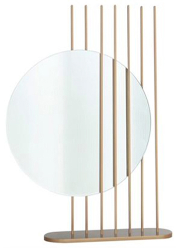

Couleur : transparent
Forme : rond
Style : ce miroir rond dit « Forest » a été conçu par la designer Sophie Larger. Il est à poser par le détenteur sur une base où se dressent des barres verticales en métal, avec finition en doré.
Époque : contemporain
Cadre : ces barres consituent un cadre décalé, dont le miroir semble glisser.
Hauteur : 60 cm
Largeur : 44 cm
Profondeur : 10 cm
Date d’acquisition : 2018-09-19
Moyen d’acquisition : achat
Prix d’achat : 825 €
En mai 2020, le prix du miroir était de 1230 $CAN (825 €).
Ce miroir est voué à être fixé sur une commode, un buffet, un secrétaire.